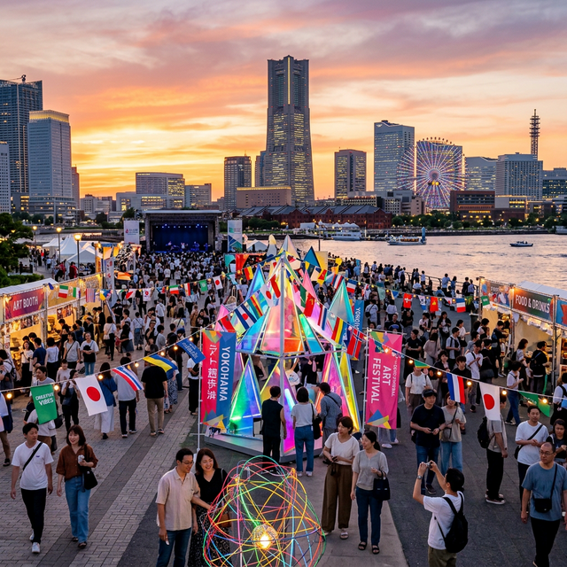
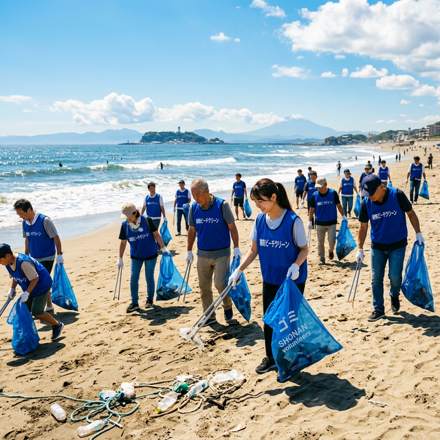

スポンサーマイページ
Total Investment (Asset)
5,000万円
▲ 前年比 +120%
TOKUスコア
8.4pt
(Moody's Impact Score)
Social ROI
285%
1円投資あたり2.85円の社会的価値
SDG貢献分布
4
11
13
社会課題への直接貢献指標
Active Impact Assets (支援中プロジェクト)
プロジェクト名 / 領域
ステータス
進捗 / 支援額

Arts & Culture
横浜アートフェス2026
Score
84
参加中
インパクト進捗
80%

Environment
湘南海岸クリーンアップ
マッチング成立
投資予定額
¥1,000,000